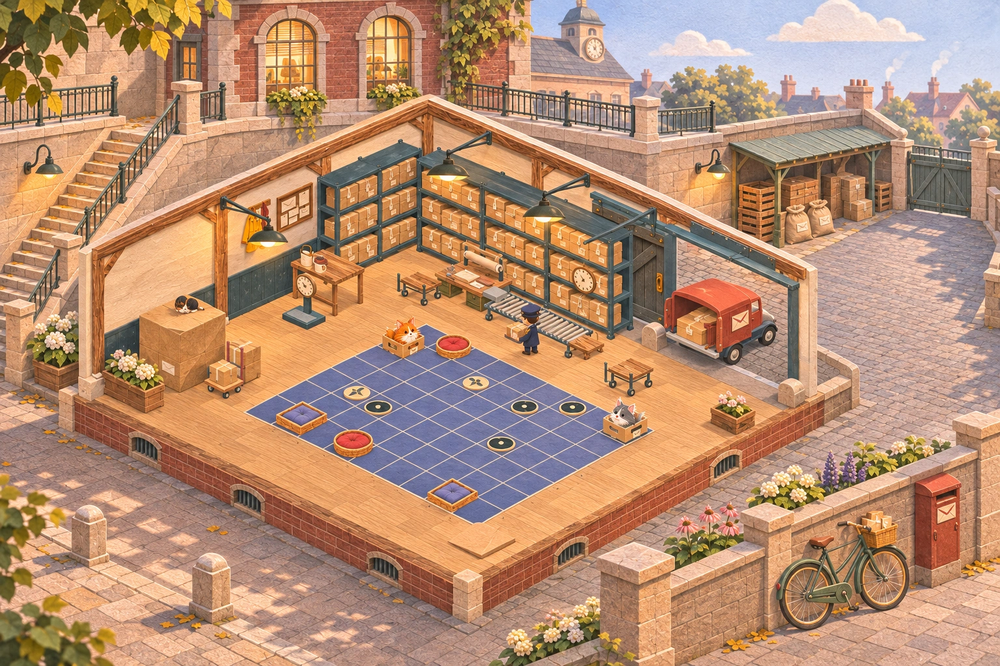
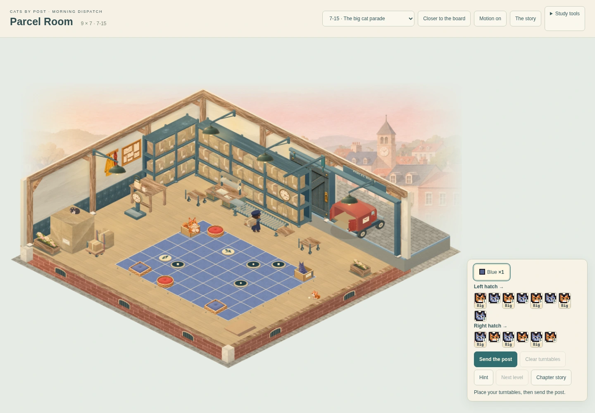

CATS BY POST · MORNING DISPATCH · ENVIRONMENT PROPOSALCity Hall’s service court
The next substantial stage is the surrounding place: a connected loading court, upper civic walkway and foreground street. This page shows a generated composition proposal. The playable room has not yet received this scenery.

Generated composition study. Morning Dispatch’s existing interior anchors the scene. The board, gate position and decorative details are illustrative; the actual build must retain the exact boards, loading contacts and vehicle route.A civic building above
Retaining walls, stairs and a walkway connect the lower warehouse to City Hall. A partial service wing gives the room a believable place beneath the civic buildings.
A working court beside it
The loading door joins a continuous cobbled vehicle lane. Sheltered return crates, sacks, lamps and wheel guards sit beside the route. The lane must fit the existing van movement.
A street in front
Paving, a low planted wall and postal street furniture continue the scene towards the viewer, while keeping the board and its labels clear.
Where the current room stops short

Actual current playable renderer. Materials and supports have improved. The thin apron and faded town still leave the warehouse isolated from its surroundings.What the references teach
The approved Sorting Office physically connects its hall, stairs, quay, boat, canal, gardens and neighbouring houses. Lantern Quay connects the play platform to roads, a landing pad and loading machinery. Parcel needs the same continuity, expressed through its own civic service-yard setting.
Next: prove the place in the renderer
Construct the court, retaining levels, stairs and street around the actual first and maximum boards. Check the van’s full route, supported transitions and board framing before finishing the environment materials. Then polish the van, loading furniture and parcel dressing as part of that place, and review the complete postal cycle.
14 November 2026 · Proposal for visual review. Gameplay, level data, timing, progress and saves remain unchanged. Shared integration and physical-device qualification follow the finished room review.